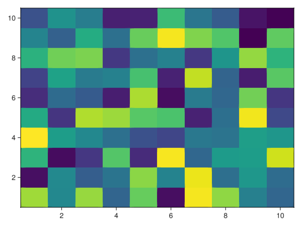
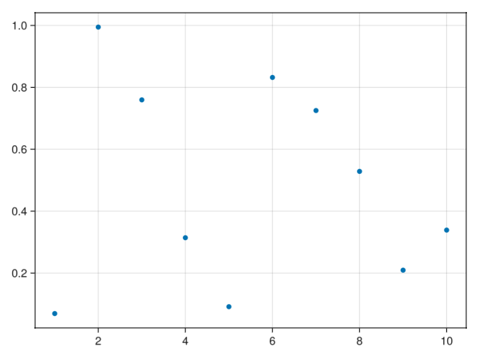
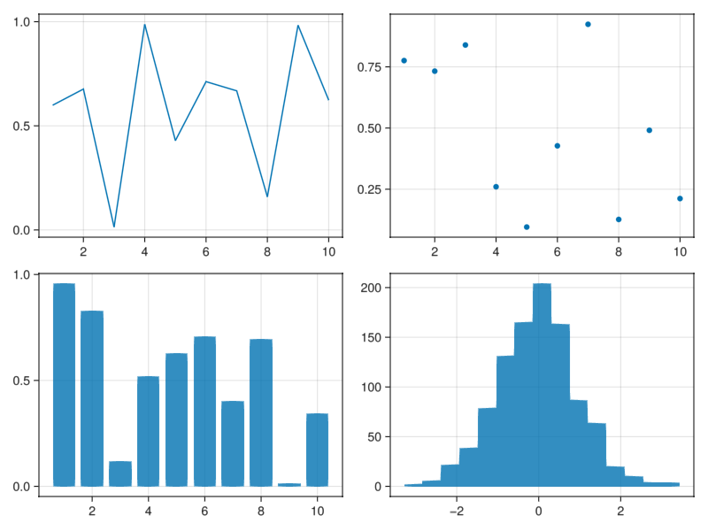
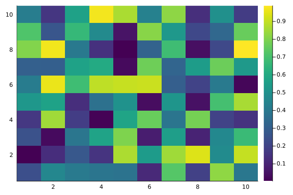
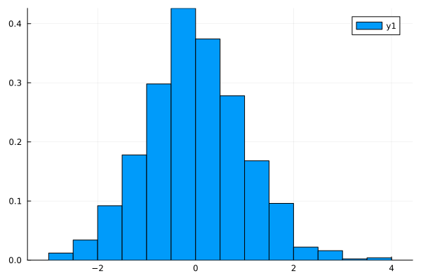
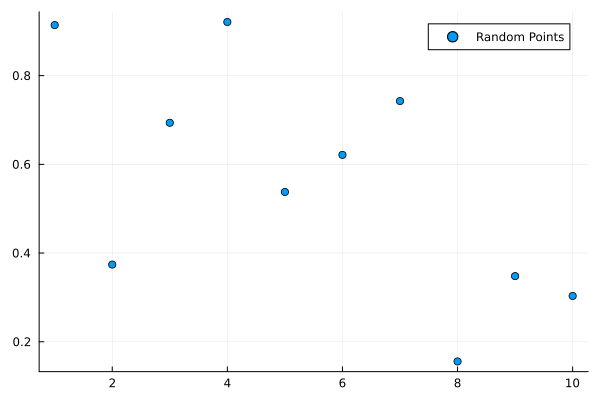
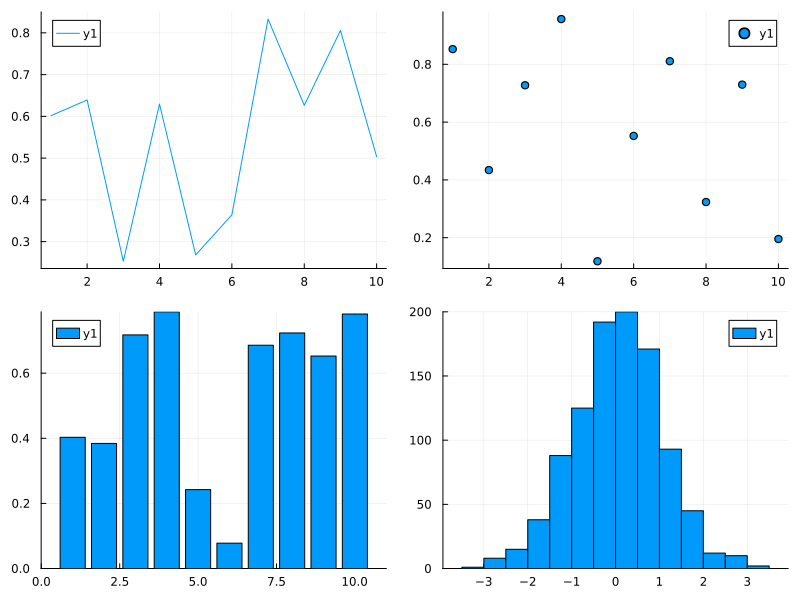
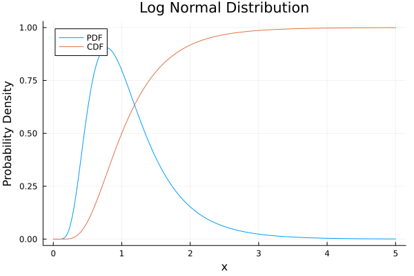

Adding plots in md file
- By using
@examplename assampleGraphwe can combine codes. So with one declaration ofusingstatement, we use it repeatedly for all subsequent plots. - Without
saveorsavefig, we can still add plots but to be more explicit, we can define save the fig file and position it by. ansvariable is defined by Documenter for last command. So, without repeating plot command, we can use it to save file.
Citation Examples
The introductory guide for Kelly investment is Fortune Formula[1].
juliaEnvTest3.sampleGraph.gm_bar_plot — Functiongm_bar_plot()GLMakie bar plot example.
using juliaEnvTest3.sampleGraph
gm_bar_plot()
juliaEnvTest3.sampleGraph.gm_basic_line_plot — Functiongm_basic_line_plot()GLMakie basic line plot example.
gm_basic_line_plot()
juliaEnvTest3.sampleGraph.gm_heatmap_plot — Functiongm_heatmap_plot()GLMakie heatmap plot example.
gm_heatmap_plot()
juliaEnvTest3.sampleGraph.gm_histogram_plot — Functiongm_histogram_plot()GLMakie historgram plot example.
gm_histogram_plot()juliaEnvTest3.sampleGraph.gm_multiple_series_plot — Functiongm_multiple_series_plot()GLMakie multiple series plot example.
gm_multiple_series_plot()
juliaEnvTest3.sampleGraph.gm_scatter_plot — Functiongm_scatter_plot()GLMakie scatter plot example.
gm_scatter_plot()
juliaEnvTest3.sampleGraph.gm_subplots_plot — Functiongm_subplots_plot()GLMakie subplots plot example.
gm_subplots_plot()
juliaEnvTest3.sampleGraph.gm_log_normal_plot — Functiongm_log_normal_plot()Plots example for log normal distribution.
Definition
Equivalently, $X$ can be expressed as:
\[X = e^{\mu + \sigma Z}\]
where $Z \sim \mathcal{N}(0, 1)$ is a standard normal random variable.
gm_log_normal_plot()juliaEnvTest3.sampleGraph.pl_bar_plot — Functionpl_bar_plot()Plots bar plot example.
pl_bar_plot()juliaEnvTest3.sampleGraph.pl_basic_line_plot — Functionpl_basic_line_plot()Plots basic line plot example.
pl_basic_line_plot()juliaEnvTest3.sampleGraph.pl_customized_plot — Functionpl_customized_plot()Plots customized plot example.
pl_customized_plot()juliaEnvTest3.sampleGraph.pl_heatmap_plot — Functionpl_heatmap_plot()Plots heatmap plot example.
pl_heatmap_plot()
juliaEnvTest3.sampleGraph.pl_histogram_plot — Functionpl_historgram_plot()Plots histogram plot example.
pl_histogram_plot()
juliaEnvTest3.sampleGraph.pl_multiple_series_plot — Functionpl_multiple_series_plot()Plots multiple series plot example.
pl_multiple_series_plot()juliaEnvTest3.sampleGraph.pl_scatter_plot — Functionpl_scatter_plot()Plots scatter plot example.
pl_scatter_plot()
juliaEnvTest3.sampleGraph.pl_subplots_plot — Functionpl_subplots_plot()Plots subplots plot example.
pl_subplots_plot()
juliaEnvTest3.sampleGraph.pl_log_normal_plot — Functionpl_log_normal_plot()Plots example for log normal distribution.
Definition
A random variable $X$ is said to follow a log-normal distribution if its natural logarithm $\ln(X)$ is normally distributed. That is:
\[\ln(X) \sim \mathcal{N}(\mu, \sigma^2)\]
pl_log_normal_plot()
juliaEnvTest3.sampleGraph — ModulesampleGraphContains examples of basic plots using GLMakie and Plots.